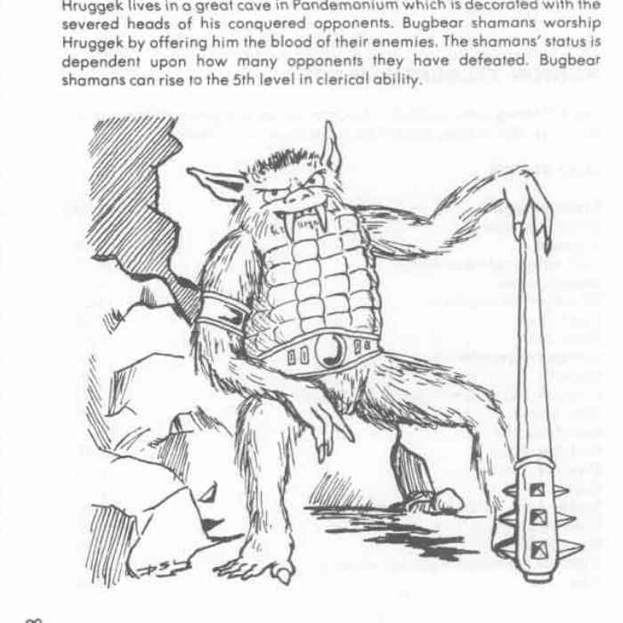

兽人、沙华鱼人与洞穴人
Gruumsh（独眼者） 是守序邪恶兽人强大神，AC −1，350 点生命值，魔法抗性 75%。他只有一只中央巨眼，持火炬与 +5 铁矛；兽人萨满必须挖出自己的左眼以证明信仰。Gruumsh 的灵兽军团在 Hell 与 Maglubiyet 的精灵／哥布林亡灵军队不断交战。
Sekolah 是沙华鱼人崇拜的鲨鱼弱等神，能以巨型白鲨形态吞食人类大小的猎物；潮汐高涨时，信徒献上衰弱而年老的同族。Laogzed 是洞穴人的混乱邪恶半神，皮肤分泌酸液，能喷出恶臭云；洞穴人会在冬至剥下旧皮并献祭给他。
